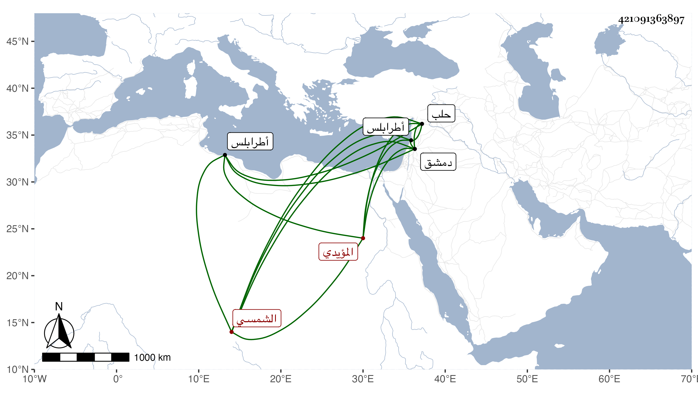

0902Sakhawi.DawLamic.ITO20230111-ara1.EIS1600.421091363897
Biography ID: 421091363897
229
جانبك الشمسي المؤيدي . اشتراه المؤيد في أيام أتابكيته ، وترقى من بعده حتى صار من أمراء طرابلس ، ثم ولي حجوبية الحجاب بحلب ثم عزل وتوجه إلى دمشق فأنعم عليه بامرة طبلخاناه بها إلى أن مات فيها في أواخر ذي القعدة أو أوائل الذي بعده سنة تسع وخمسين .
